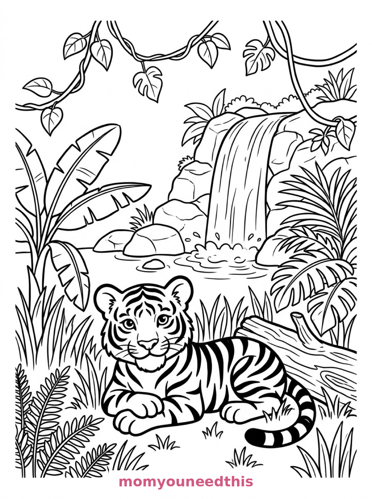
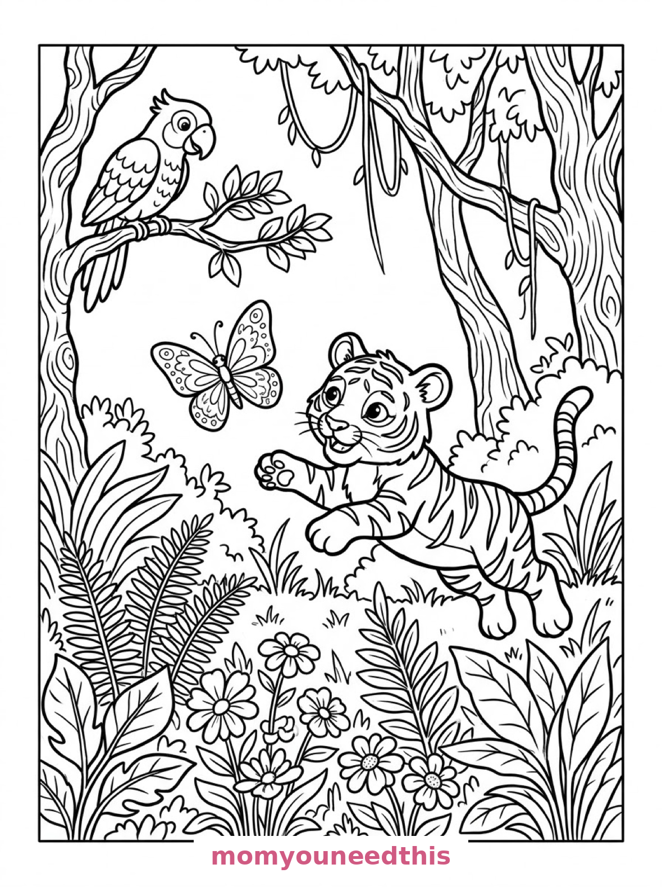
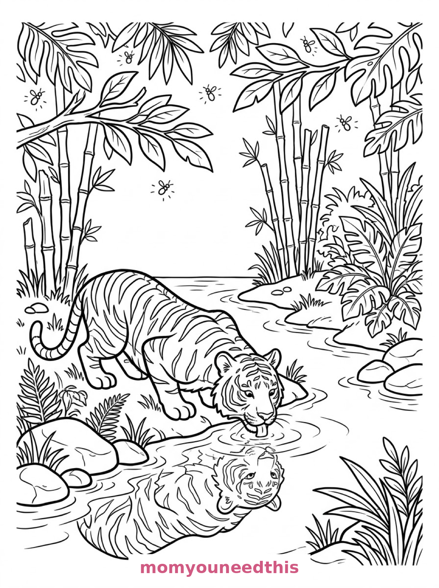

Free Tiger Coloring Pages Jungle Rest, Cub Play & Dusk Drink Printables
These free tiger coloring pages roam from waterfall to wildflower clearing to jungle stream — a resting tiger, a pouncing cub, and a tiger drinking at dusk. Download the set below, print at home on letter-size paper, and let the coloring fun begin. No signup needed.
Last updated: October 23, 2026
Quick Answer
Yes — this page has three free printable tiger coloring pages: a young tiger resting by a waterfall, a tiger cub pouncing at a butterfly, and a tiger drinking from a jungle stream at dusk. Bold outlines and big spaces, made for little hands. Download, print on letter-size paper, and hand over the crayons — no signup, no cost.
At a Glance
- Ages: 3–8
- Pages: 3 free printables
- Format: Print at home, letter size
- Cost: Free, no signup
- Supplies: Crayons or markers
- Time: 10–20 minutes
🐯 Tiger Resting by the Waterfall Coloring Page

🎨 Download Your Free Resting Tiger Coloring Page
A young tiger rests its chin on its paws in tall jungle grass, striped tail curled around a fallen log, with banana leaves, vines and a waterfall behind — bold outlines, big spaces, zero signup.
⬇️ Download Free Resting Tiger Page 🖨️ Print Resting Tiger Page🎁 Free printable for preschoolers & kids
🦋 Tiger Cub Pouncing at a Butterfly Coloring Page

🎨 Download Your Free Tiger Cub Coloring Page
A tiger cub pounces after a large butterfly through a clearing of ferns and wildflowers, with a parrot watching from a low branch — bold outlines, big spaces, zero signup.
⬇️ Download Free Tiger Cub Page 🖨️ Print Tiger Cub Page🎁 Free printable for preschoolers & kids
🌅 Tiger Drinking at the Stream Coloring Page

🎨 Download Your Free Tiger Stream Coloring Page
A tiger drinks from a jungle stream at dusk, its reflection wavy in the water, with smooth boulders, bamboo on the far bank and fireflies among the leaves — bold outlines, big spaces, zero signup.
⬇️ Download Free Tiger Stream Page 🖨️ Print Tiger Stream Page🎁 Free printable for preschoolers & kids
More Coloring Pages
Tap any picture to open its theme page and download the free printable.


🐯 How To Use This Page
- Browse the three designs and pick the tiger your child will love most.
- Tap download or print under that design — the file opens full-size, ready for letter-size paper.
- Print a couple of copies of the cub page — no two butterfly chases ever look the same.
- Color together with crayons or markers and growl softly if the mood strikes.
🌿 Why Kids Love Tiger Coloring Pages
Tigers are the biggest cats most kids will never meet, which is exactly why coloring them is so satisfying. These pages show tigers being cats: resting a chin on paws, pouncing at a butterfly, lapping at a stream. The jungle danger stays off the page, and all the charm stays on.
Tiger pages are also built for stripes — and stripes are one of the most satisfying things a kid can color. Long bands that take the whole crayon stroke, alternating colors that make counting automatic, and fur that can be orange, sandy, white or anything in between. One design in this set even comes with its stripes pre-filled in bold black, so the youngest colorers can focus on the fur and the jungle around it.
🐾 Meet the Three Tiger Scenes on This Page
The tiger by the waterfall. A young tiger rests its chin on its paws in tall jungle grass, its striped tail curled around a fallen log, with broad banana leaves, hanging vines and a waterfall tumbling over rocks behind. This tiger's body stripes come pre-filled in bold black — the design does the stripe work, so kids of any age can focus on the grass, the leaves and the falling water.
The cub and the butterfly. A tiger cub pounces after a large butterfly through a clearing of ferns and wildflowers, with a parrot watching from a low branch and twisted tree trunks behind. It is the most playful page in the set — the cub mid-leap, the butterfly just out of reach, and plenty of wildflowers to color between.
The tiger at the stream. A tiger drinks from a jungle stream at dusk, its reflection wavy in the water, with smooth boulders, bamboo stalks on the far bank and fireflies dotted among the leaves overhead. It is the gentlest page in the set and a lovely pick for quiet coloring time.
✏️ Tiger Coloring Tips
- Stripe smart. Color the fur first in one shade, then add stripes in a darker color (or leave the pre-filled stripes alone on the resting tiger and color everything around them).
- Try a white tiger. Some real tigers are white with gray stripes — a pale crayon or colored pencil on white paper makes a striking version.
- Make the jungle green in layers. Dark leaves, light leaves, medium vines — three greens make the background look deep without any instruction.
- Let the fireflies glow. Color the leaves around them dark and leave the firefly dots white or pale yellow, and they will look like they shine.
🐯 Coloring Pages for Different Ages
For ages 3 to 4, start with the resting tiger. One big cat shape, pre-filled stripes, and a jungle background that can be any shade of green — it is finished and frameable fast.
For ages 5 to 6, the cub and the butterfly is the sweet spot. The cub is still a big, bold shape, but the butterfly, the ferns and the parrot add choices and a little story to build.
For ages 7 to 8, hand over the dusk stream. The reflection, the boulders, the bamboo and the fireflies reward slow, careful coloring — and the finished page genuinely looks like evening.
🌿 More Tiger Fun After Coloring
Turn the set into a jungle field guide: label each page — “the resting tiger,” “the cub,” “the drinker” — and ask your child to add one fact under each (what it eats, where it sleeps, what the stripes are for). Their guesses are the fun part.
For more big cats and jungle friends, visit the animal coloring pages. And if your house wants an even bigger jungle animal next, the elephant coloring pages continue the safari with a watering hole, a circus and a mango basket.
🔗 More Free Printables You’ll Love
- Free Animal Coloring Pages Free printable animal coloring pages for little learners.
- Free Cat Coloring Pages The house-cat cousins of these big cats, to print and color.
- Free Elephant Coloring Pages A watering hole, a circus elephant and a mango basket to color.
- All Free Coloring Pages Browse every free coloring page on the site, organized by theme.
❓ Tiger Coloring Pages FAQ
Are these tiger coloring pages really free?
Yes — all three designs on this page are free original printables from MomYouNeedThis. Download them, print them at home, and color — no signup and no cost.
What ages are these coloring pages best for?
Kids ages 3 to 8 get the most from this set. The resting tiger is the gentlest start for younger children, while the cub and the dusk stream have the detail older kids enjoy.
How do I print a coloring page?
Tap the download button under the design you want, then print the file on regular letter-size paper. The print button opens the full-size page in a new tab if you prefer to print from there.
Are the tiger's stripes already colored in on the resting tiger page?
Yes — on that design the body stripes come pre-filled in bold black, so the page works for very young colorers. The fur around them, the grass and the waterfall are all ready to color.
Can I make a tiger coloring book from these pages?
Yes — print all three designs, stack them in order, and staple along the left edge. Add a cover sheet with your child's name for a finished homemade tiger coloring book.